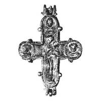

Catalog › CE-0695 · KOR2003-II.1.1.74
Encolpion întreg în relief, fără inel de agățare, Răstignire pe față, Odighitria pe revers
sec. sfârșit XII (1101–1200) · Pekari (Kniaja Gora), raionul Kaniv, regiunea Cerkasî, Ucraina · Muzeul Național de Istorie al Ucrainei (NMIU), Kiev, inv. В-969
double-sided reliquary cross (enkolpion), aramă; c. sfârșit XII (1101–1200); found at Pekari (Kniaja Gora), raionul Kaniv, regiunea Cerkasî, Ucraina; kept at Muzeul Național de Istorie al Ucrainei (NMIU), Kiev.


Identificare
- Categorie
- Encolpion bivalv (relicvar)
- Material
- Aramă
- Tehnică
- Turnare în relief
- Stare
- Întreagă
- Dimensiuni
- Î 86 × L 71 × Gr 11 mm
Iconografie
- Avers
- Neidentificat
- Descriere avers
- Encolpion în relief, fără inel de agățare, cu capete rotunjite și câte două butonașe pe fiecare capăt. Corodat, imaginile de pe exterior sunt șterse (lustruite), în centrul crucii o mică gaură străpunsă. În centrul crucii, pe față, Răstignirea; pe capătul de sus și pe cele laterale imagini bust ale unor sfinți. Pe marginea valvei, pe exterior, linii în relief imitând filigranul (asemănătoare unor borduri).
- Revers
- Maica Domnului cu Pruncul; Neidentificat
- Descriere revers
- În centrul valvei de revers, pe exterior, figura în picioare a Maicii Domnului cu Pruncul (tip Odighitria); în medalioanele laterale și în cel de sus imagini bust ale unor sfinți. Toate imaginile de pe ambele valve sunt în relief. Suprafața interioară a valvelor este netedă.
- Inscripții
- Н (în centrul crucii, la stânga imaginii Maicii Domnului; inscripție adâncită)
Datare și atribuire
- Datare
- sec. sfârșit XII (1101–1200)
- Centru
- Necunoscut
- Tipologie
- Korzukhina–Peskova 2003, tip II 1 1
Descoperire
- Localitate
- Pekari (Kniaja Gora)
- Regiune
- raionul Kaniv, regiunea Cerkasî
- Țară
- Ucraina
- Context
- Fortificație
Păstrare și referințe
- Colecție
- Muzeul Național de Istorie al Ucrainei (NMIU), Kiev
- Nr. inventar
- В-969
- Bibliografie
- G. F. Korzukhina, A. A. Peskova, Древнерусские энколпионы. Нагрудные кресты-реликварии XI–XIII вв., Sankt-Petersburg, 2003 [Korzukhina–Peskova 2003], p. 70, cat. nr. II 1 1/74, reprodusă la Табл. 20 (planșe, p. 262).
- Figura
- Табл. 20
- Planșe
- Korzukhina–Peskova 2003, Табл. 20 (planșă fără paginație proprie în PDF; p. 262 tipărită)
- Observații
- Datare după Peskova: sec. sfârșit XII. Circumstanțe: Săpături N. F. Beleașevski, anii 1890 (pe așezarea fortificată). Proveniență în colecție: din colecția B. I. și V. N. Khanenko. Pe fotografia din tabel apare numai valva de revers. Coordonate: nu sunt date în sursă.
Citare: Corpus Encolpiorum, CE-0695, Encolpion întreg în relief, fără inel de agățare, Răstignire pe față, Odighitria pe revers, --root/piese/KOR2003-II.1.1.74/ (accesat 2026-10-17).